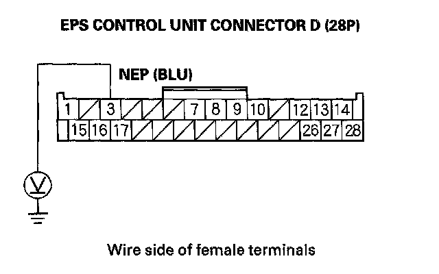
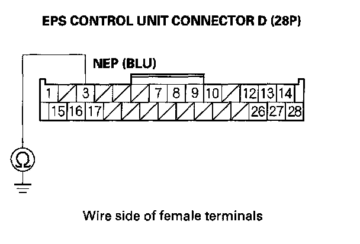
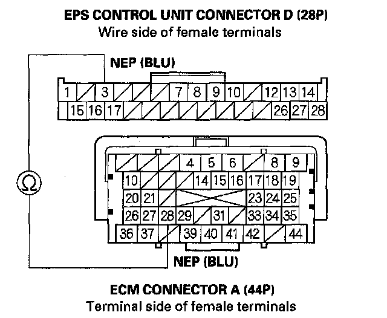

DTC 22-01
DTC 22-01: Engine Speed Signal (initial diagnosis)NOTE: If the MIL indicator is on, troubleshoot the fuel and emissions systems first.
1. Turn the ignition switch OFF.
2. Connect the HDS to the data link connector (DLC).
3. Start the engine,
4. Check the ENGINE SPEED in the DATA LIST with the HDS.
Is there 0 rpm at idle?
YES - Go to step 5.
NO - The system is OK at this time.
5. Turn the ignition switch OFF.
6. Disconnect EPS control unit connector D (28P).
7. Start the engine.
8. Measure voltage between EPS control unit connector D (28P) terminal No. 3 and body ground.

Is there any voltage?
YES - Check for loose terminals in the EPS control unit connectors, and repair if necessary. If no poor connections are found, replace the EPS control unit.
NO - Go to step 9.
9. Turn the ignition switch OFF.
10. Check for continuity between EPS control unit connector D (28P) terminal No. 3 and body ground.

Is there continuity?
YES - Repair short to body ground in the wire between the EPS control unit and the ECM.
NO - Go to step 11.
11. Short the SCS line with the HDS.
12. Disconnect ECM connector A (44P).
13. Check for continuity between EPS control unit connector D (28P) terminals No. 3 and ECM connector A (44P) terminals No. 28.

Is there continuity?
YES - Check for loose terminals in the ECM connector A (44P), and repair if necessary. If no poor connections are found replace the ECM.
NO - Repair open in the wire between the EPS control unit and the ECM.